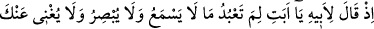
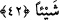
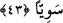

ve Yakub’u armağan ettik ve hepsini de Peygamber yaptık.
50. Onlara rahmetimizden lütfettik ve onlara yüce ve haklı bir şöhret verdik.
Ey Muhammed! “Kitap’ta” yani bu sûrede veya Kur’an’da ümmetine, “Onlara
İbrahim’in haberini oku” (eş-Şuarâ, 26/69) âyetinde de belirtildiği üzere “İbrahim’i
de an!” İbrahim’in kıssasını oku ve onlara tebliğ et. Çünkü çeşitli din mensupları onun
üstünlüğünü kabul ediyor, Arap müşrikleri ise onun oğlu olmakla övünüyordu. Bundan
dolayı Allah Teâlâ Habîbi’ne onların şirkten vazgeçmeleri için İbrahim (a.s.)’ın tevhid
üzere olduğunu haber vermesini emretti.
“Gerçekten o, çok doğru” yaptığı ve terk ettiği her işte, her zaman, doğruluğa sarılan,
onda mübâlağa gösteren “bir peygamberdi.” Yani hem doğruluğu hem de peygamberliği
kendisinde topluyordu. Çünkü doğruluk peygamberliğin gereği ve şartlarındandır. Ancak
peygamber olmak, doğru olmanın şartlarından değildir. Bir başka ifadeyle, her
peygamberin doğru olması gerekir, ama her doğru olanın peygamber olması gerekmez.
Bütün peygamberler doğrudurlar. Doğruluk (sıdk) erbâbının da dereceleri vardır.
Bunlar sâdık, sadûk ve sıddîktır. Sâdık Allah’la beraber, Allah için ve Allah uğrunda
doğru olan kimsedir. O, nefsinden fânî Rabb’i ile bâkîdir.
Rasûl ile nebî arasında şöyle bir fark vardır: Rasûl, insan olsun melek olsun
hükümleri tebliğ için gönderilen kimsedir. Nebî ise böyle değildir, nebîlik sadece
insanlara mahsustur.
42. Hani babasına demişti ki: “Babacığım, işitmeyen, görmeyen ve sana hiçbir
faydası olmayan şeylere niçin tapıyorsun?”
“Hani babasına demişti ki” yâni İbrahim (a.s.)’ın babası Âzer’e nazik bir şekilde,
söze başlayarak şöyle dediği zamanı hatırla: “Babacığım, işitmeyen” kendisine
tapınırken senin övgünü ve yalvarmanı duymayan, resim ve heykellerden ibaret olan,
senin önünde boyun eğişini ve eğilmeni “görmeyen” ve sana ne dünya ne de âhirette
Allah Teâlâ’nın azabından azıcık bir şeyi bile uzaklaştırma konusunda “hiçbir faydası
olmayan şeylere niçin tapıyorsun?”